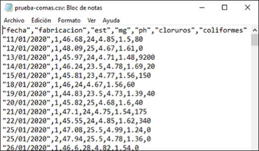

3 El software estadístico R.
R es un lenguaje de programación y un entorno de software utilizado para el análisis estadístico, la visualización de datos y la modelización. A continuación, se presentan algunas de las características clave de R:
Amplio espectro de funcionalidades: R abarca una amplia gama de herramientas y paquetes diseñados para realizar diversos análisis estadísticos, exploración de datos y modelización.
Estadística descriptiva: R ofrece funciones para calcular estadísticas descriptivas básicas, como la media, mediana, desviación estándar, varianza, rango, cuartiles y percentiles. Estas funciones son esenciales para explorar y resumir datos.
Contrastes de hipótesis: R proporciona funciones para realizar pruebas estadísticas, como t-tests, test chi-cuadrado, ANOVA y pruebas no paramétricas. Estas pruebas permiten evaluar hipótesis y comparar grupos de datos.
Distribuciones de probabilidad: R incluye una amplia variedad de funciones para trabajar con distribuciones de probabilidad (por ejemplo, normal, uniforme, binomial, Poisson). Esto es útil para generar números aleatorios, calcular probabilidades y cuantiles.
3.1 Usos y aplicaciones en la estadística industrial
En el contexto de la estadística industrial, R se utiliza para:
Control de calidad: R permite analizar datos de procesos industriales, identificar desviaciones y controlar la calidad de los productos.
Optimización de procesos: Mediante técnicas estadísticas avanzadas, R ayuda a optimizar procesos industriales, reducir costos y mejorar la eficiencia.
Análisis de fiabilidad: R se utiliza para evaluar la confiabilidad de sistemas y componentes en la industria.
3.2 Ventajas frente a las hojas de cálculo tradicionales
Las ventajas de utilizar R en lugar de hojas de cálculo tradicionales (como Excel) incluyen:
Reproducibilidad: R permite crear flujos de trabajo basados en código, lo que mejora la reproducibilidad de los análisis y facilita la colaboración entre investigadores¹.
Flexibilidad estadística: R es especialmente útil para técnicas avanzadas de análisis, lo que lo convierte en una excelente opción para investigadores que buscan análisis de vanguardia².
Capacidad para tratar grandes cantidades de datos: R puede manejar grandes conjuntos de datos sin problemas, lo que es fundamental en la estadística industrial⁴.
3.3 Utilización práctica de R en el entorno industrial
Importación de datos y exportación de datos
Manipulación de datos: depuración, corrección, filtrado de datos.
Exploración gráfica de los datos
Análisis estadísticos específicos.
Gráficos de control
Informes automatizados
3.4 Exportar los datos de Excel a R
Una vez que tenemos nuestros datos en Excel, hay dos formas en las que podemos poner los datos a disposición de R para su análisis: exportarlos a un archivo de texto con formato CSV, o leer directamente los datos de Excel desde R utilizando las funciones de la librería tidyverse. En ambos casos, el resultado en R es un dataframe o cuadro de datos, que es una estructura equivalente a la de nuestra tabla de datos en Excel.
3.4.1 Qué es un fichero plano y un fichero CSV
Se suele llamar fichero plano a un fichero de datos de texto sin ningún tipo de formato, donde los datos están separados por espacios o tabulaciones. Muchos equipos automáticos, como balanzas de laboratorio o básculas de proceso, producen ficheros planos de texto, que se pueden importar a Excel o R. Un fichero CSV es un fichero plano en el que los valores están separados por un carácter especial, llamado separador. Este separador puede ser una coma , (cuando los decimales se separan mediante un punto, como en EEUU) o un punto y coma ; (cuando los decimales se separan mediante una coma, como en España)



En un fichero plano o en un fichero CSV, la primera fila puede contener los nombres de las columnas. En algunos casos, los elementos de texto pueden estar entre comillas. En estos casos, los programas de importación se ocupan de la conversión de formatos.
La importación de un fichero CSV en Excel en español es directa si se ha generado con puntos y comas como separador y comas para los decimales; si no es así, nos aparecerá como un fichero plano de texto sin formato, y tendremos que realizar una conversión.
3.4.2 Cómo exportar los datos a un fichero CSV desde Excel.
3.5 El concepto de reproducibilidad
La reproducibilidad es un principio fundamental en el método científico y se aplica tanto en la investigación como en el análisis de datos. Veamos en detalle qué significa:
- Definición de Reproducibilidad:
- La reproducibilidad se refiere a la capacidad de obtener resultados consistentes al replicar un estudio o experimento utilizando los mismos datos y metodología original.
- En otras palabras, cuando se replica un análisis de datos o un experimento, los resultados deben ser alcanzados nuevamente con un alto grado de confiabilidad.
- Tipos de Reproducibilidad:
- Reproducibilidad: Se logra al recrear exactamente los mismos resultados utilizando los datos originales y el código informático empleado para los análisis¹.
- Replicabilidad: Implica obtener resultados consistentes utilizando nuevos datos o nuevos resultados computacionales para responder a la misma pregunta científica⁴.
- Historia y Significado:
- El químico irlandés Robert Boyle, en el siglo XVII, subrayó la importancia de la reproducibilidad en la ciencia. Boyle sostenía que los fundamentos del conocimiento debían basarse en hechos producidos experimentalmente, que pudieran volverse creíbles para la comunidad científica por su reproducibilidad¹.
- La bomba de aire de Boyle, un aparato científico complicado y costoso en ese momento, condujo a una de las primeras disputas documentadas sobre la reproducibilidad de un fenómeno científico¹.
- Importancia en la Ciencia:
- La reproducibilidad es esencial para la investigación científica, ya que permite validar y verificar los resultados.
- En las últimas décadas, ha habido una creciente preocupación por la falta de reproducibilidad en muchos resultados científicos publicados, lo que ha llevado a una crisis de reproducibilidad o replicación¹.
En resumen, la reproducibilidad garantiza que los resultados científicos sean confiables y puedan ser validados por otros investigadores. Es un pilar fundamental para el avance del conocimiento en todas las disciplinas⁴.¹.
La reproducibilidad en el análisis estadístico es un concepto fundamental que se aplica tanto en R como en Microsoft Excel. Veamos cómo se relaciona con cada una de estas herramientas:
- Reproducibilidad en R:
- R es un lenguaje de programación y entorno de software ampliamente utilizado para análisis estadístico y visualización de datos.
- Ventajas de la reproducibilidad en R:
- Precisión: R está diseñado específicamente para análisis estadístico, lo que lo hace más preciso que Excel en ciertos casos, como en análisis de regresión lineal⁶.
- Capacidad avanzada: R ofrece una amplia gama de paquetes y funciones para realizar análisis estadísticos avanzados, como modelos lineales, series temporales, análisis multivariante y más.
- Scripts y código abierto: Puedes escribir scripts en R para automatizar tareas y asegurar la reproducibilidad. Los scripts son transparentes y pueden ser compartidos y verificados por otros investigadores.
- Reproducibilidad en Microsoft Excel:
- Excel es una herramienta ampliamente utilizada para análisis de datos y cálculos, pero tiene algunas limitaciones en términos de reproducibilidad:
- Inexactitudes: Estudios han demostrado que Excel puede mostrar ciertas inexactitudes en análisis de regresión lineal y otros métodos estadísticos⁶.
- Limitaciones estadísticas: Excel no está diseñado específicamente para análisis estadístico avanzado, por lo que puede carecer de algunas capacidades necesarias para investigaciones más complejas.
- Falta de transparencia: Las fórmulas y cálculos en Excel pueden ser difíciles de rastrear y verificar, lo que afecta la reproducibilidad.
- Excel es una herramienta ampliamente utilizada para análisis de datos y cálculos, pero tiene algunas limitaciones en términos de reproducibilidad:
- Recomendaciones:
- Si buscas alta precisión y análisis avanzados, R es una excelente opción.
- Si necesitas realizar cálculos sencillos o presentar datos de manera visual, Excel sigue siendo útil, pero debes ser consciente de sus limitaciones en términos de reproducibilidad.
En resumen, R es más adecuado para análisis estadístico riguroso y reproducible, mientras que Excel es útil para tareas más básicas. La elección depende de tus necesidades específicas y del contexto de tu investigación⁶.⁶.
La reproducibilidad es la capacidad de un ensayo o experimento de ser reproducido o replicado por otros, en particular, por la comunidad científica. La reproducibilidad es uno de los pilares del método científico, siendo la falsabilidad el otro.
Aunque existen diferencias conceptuales según la disciplina científica, en muchas disciplinas, sobre todo en aquellas que implican el uso de estadística y procesos computacionales, se entiende que un estudio es reproducible si es posible recrear exactamente todos los resultados en la misma escala y a partir de los datos originales y el código informático empleado para los análisis. Por el contrario, en este contexto, la repetibilidad se refiere a la posibilidad de obtener resultados consistentes al replicar un estudio con un conjunto distinto de datos, pero obtenidos siguiendo el mismo diseño experimental. Así mismo, el término está estrechamente relacionado al concepto de testabilidad.
3.5.1 Reproducibilidad en metrología
En metrología, y de forma particular en ingeniería, ciencia, industria y estadística, la reproducibilidad es la capacidad de un instrumento de dar el mismo resultado en mediciones diferentes realizadas en las mismas condiciones a lo largo de periodos dilatados de tiempo. Esta cualidad debe evaluarse a largo plazo. Ésta es la gran diferencia con precisión que debe, en cambio, ser evaluada a corto plazo.
3.5.2 Pasos para la instalación de las herramientas básicas de R
3.5.2.1 Instalación de R en Windows
- Accede al sitio oficial de CRAN (Comprehensive R Archive Network), que es el repositorio central de software de R⁴.
- Haz clic en el enlace “Download R for Windows”.
- Selecciona “install R for the first time” en la parte superior de la página.
- Elige la versión de R que deseas instalar (por ejemplo, R 4.0.3).
- Guarda el archivo ejecutable en tu computadora (puedes guardarlo en el escritorio).
- Haz doble clic en el archivo descargado para ejecutarlo.
- Acepta los permisos para que la aplicación realice cambios en tu dispositivo.
- Selecciona el idioma de tu preferencia y sigue las opciones de instalación (puedes aceptar las opciones preestablecidas).
3.5.2.2 Instalación de RStudio en Windows
- Abre tu navegador y dirígete al sitio oficial de RStudio.
- Haz clic en “DOWNLOAD”.
- Busca la opción “RStudio Desktop” y selecciona “DOWNLOAD”.
- Haz clic en “DOWNLOAD RSTUDIO FOR WINDOWS”.
- Guarda el archivo ejecutable.
- Ejecuta el archivo descargado y sigue las instrucciones de instalación.
3.5.3 Tipos de datos en R
- Numérico (numeric):
- Representa valores decimales, tanto enteros como de punto flotante (double).
- Ejemplo:
3.14,42,0.5.
- Entero (integer):
- Representa números enteros.
- Ejemplo:
5,-10,100.
- Lógico (logical):
- Representa valores booleanos:
TRUEoFALSE. - Ejemplo:
TRUE,FALSE.
- Representa valores booleanos:
- Carácter (character):
- Representa cadenas de texto.
- Ejemplo:
"Hola, mundo","R es genial".
- Complejo (complex):
- Representa números complejos con parte real e imaginaria.
- Ejemplo:
1 + 2i,3 - 4i.
- Raw:
- Representa datos en formato binario sin procesar.
- Ejemplo:
as.raw(0:5)(crea un vector de bytes).
3.5.4 Vectores
En R, un vector es una estructura de datos fundamental que almacena elementos del mismo tipo, ya sean números, caracteres o lógicos². Aquí tienes una breve explicación:
- ¿Qué es un vector en R?
- Un vector es una secuencia de elementos de datos del mismo tipo básico.
- Los miembros de un vector se llaman oficialmente componentes.
- Pueden ser de dos tipos: vectores atómicos y listas².
Los vectores atómicos son los más comunes y se utilizan para almacenar datos homogéneos. Algunos ejemplos de vectores atómicos incluyen:
- Numéricos (numeric):
- Representan valores decimales, tanto enteros como de punto flotante.
- Ejemplo:
c(3.14, 42, 0.5).
- Caracteres (character):
- Almacenan cadenas de texto.
- Ejemplo:
c("Hola", "Mundo").
- Lógicos (logical):
- Contienen valores booleanos:
TRUEoFALSE. - Ejemplo:
c(TRUE, FALSE, TRUE).
- Contienen valores booleanos:
- Enteros (integer):
- Representan números enteros.
- Ejemplo:
c(5, -10, 100).
Los vectores son fundamentales para realizar operaciones matemáticas, análisis de datos y manipulación de información en R.
3.5.4.1 Ejemplos de creación de vectores en R
Los vectores en R pueden contener datos del mismo tipo y se crean utilizando la función c().
- Vectores numéricos:
Puedes crear un vector numérico utilizando la función
c():numeros <- c(1, 2, 3, 4, 5)Esto crea un vector con los números del 1 al 5.
- Vectores de caracteres:
Para crear un vector de caracteres, simplemente proporciona las cadenas de texto entre comillas:
frutas <- c("manzana", "banana", "cereza")Esto crea un vector con los nombres de algunas frutas.
- Vectores lógicos:
Los vectores lógicos contienen valores
TRUEoFALSE. Puedes crear uno así:logico <- c(TRUE, FALSE, TRUE)Esto crea un vector con tres valores lógicos.
- Vectores con nombres:
Puedes asignar nombres a los elementos de un vector:
mi_vector <- c(naranja = 4, manzana = 6)Esto crea un vector con dos elementos nombrados: “naranja” y “manzana”.
- Data frames:
- Introduce los data frames como tablas de datos con filas y columnas.
- Explica cómo crear, acceder y modificar data frames.
- Destaca la importancia de los data frames para el análisis de datos.
Un data frame en R es una estructura de datos bidimensional que se utiliza para almacenar información tabular. Es similar a una tabla o una hoja de cálculo, donde cada columna puede contener diferentes tipos de datos (números, cadenas de texto, etc.). Los data frames son muy útiles para trabajar con datos estructurados en R. Puedes acceder a las columnas y realizar análisis estadísticos sobre ellos.
Aquí tienes una descripción más detallada y algunos ejemplos:
- Concepto de Data Frame:
- Un data frame es una estructura especializada de tipo lista en R.
- Cada componente del data frame tiene la misma longitud y forma una columna.
- Los componentes individuales forman las filas del data frame.
- Puedes pensar en un data frame como una matriz donde cada columna puede contener diferentes tipos de datos¹.
- Ejemplo de Creación de Data Frame desde Vectores:
Puedes crear un data frame utilizando la función
data.frame().Por ejemplo, consideremos los siguientes datos:
Name <- c("Jon", "Bill", "Maria", "Ben", "Tina") Age <- c(23, 41, 32, 58, 26) df <- data.frame(Name, Age) print(df)Esto creará un data frame con dos columnas: “Name” y “Age”. Los valores coincidirán con los datos proporcionados.
- Ejemplo de Creación de Data Frame desde una Matriz:
También puedes crear un data frame a partir de una matriz existente.
Supongamos que tenemos una matriz llamada
my_matrix:my_matrix <- matrix(c(1, 2, 3, 4, 5, 6), ncol = 2) df_from_matrix <- data.frame(my_matrix) print(df_from_matrix)Esto convertirá la matriz en un data frame con dos columnas.
- Ejemplo de Creación de Data Frame desde Valores Iniciales:
Si deseas crear un data frame con valores específicos, puedes hacerlo directamente:
df_custom <- data.frame( Name = c("Alice", "Bob", "Carol"), Age = c(30, 25, 28) ) print(df_custom)Esto creará un data frame personalizado con los valores proporcionados.
- Ejemplo de Creación de Data Frame Vacío con Nombres de Columna:
Si necesitas un data frame vacío con nombres de columna, puedes hacerlo así:
empty_df <- data.frame(Name = character(0), Age = numeric(0)) print(empty_df)Esto crea un data frame sin filas pero con las columnas “Name” y “Age”.
3.5.4.2 Creación de un dataframe a partir de un fichero CSV
crear un data frame en R a partir de la lectura de un archivo CSV es una tarea común. Aquí tienes los pasos para hacerlo:
- Leer el archivo CSV:
Primero, necesitas tener un archivo CSV con los datos que deseas cargar en un data frame.
Utiliza la función
read.csv()para leer el archivo CSV y convertirlo en un data frame. Por ejemplo:mi_data_frame <- read.csv("ruta/al/archivo.csv")Reemplaza
"ruta/al/archivo.csv"con la ubicación real de tu archivo CSV.
- Explorar el data frame:
- Una vez que hayas leído el archivo, puedes explorar el contenido del data frame utilizando funciones como
head(mi_data_frame)para ver las primeras filas osummary(mi_data_frame)para obtener estadísticas resumidas.
- Una vez que hayas leído el archivo, puedes explorar el contenido del data frame utilizando funciones como
- Acceder a los datos:
Puedes acceder a las columnas del data frame utilizando el operador
$. Por ejemplo:primera_columna <- mi_data_frame$NombreColumna
- Manipular los datos:
- Puedes realizar operaciones, filtrar filas y modificar los valores en el data frame según tus necesidades.
- Guardar cambios:
Si realizas modificaciones en el data frame, puedes guardar los cambios en un nuevo archivo CSV utilizando la función
write.csv():write.csv(mi_data_frame, "ruta/nuevo_archivo.csv", row.names = FALSE)Esto creará un nuevo archivo CSV con los datos actualizados.
Recuerda adaptar los nombres de las columnas y las rutas de los archivos según tu caso específico.
- Visualización de datos:
- Menciona la importancia de la visualización en el análisis estadístico.
- Si hay tiempo, muestra cómo crear gráficos básicos con R (histogramas, scatter plots, etc.).
¡Por supuesto! La visualización de datos es fundamental en el análisis de datos, y R ofrece varias opciones para crear gráficos. Aquí te presento una breve descripción y ejemplos de cómo utilizar tanto el programa base como la biblioteca ggplot2 del paquete tidyverse:
- Programa Base de R:
- El programa base de R proporciona funciones para crear gráficos básicos directamente desde los datos.
- Algunos ejemplos de gráficos básicos son:
Gráfico de dispersión:
# Crear un gráfico de dispersión plot(mpg$displ, mpg$hwy, main = "Consumo de combustible", xlab = "Desplazamiento", ylab = "Millas por galón")Histograma:
# Crear un histograma hist(mpg$hwy, main = "Distribución de millas por galón", xlab = "Millas por galón")Gráfico de barras:
# Crear un gráfico de barras barplot(table(mpg$class), main = "Distribución de clases de vehículos", xlab = "Clase", ylab = "Frecuencia")
- Biblioteca ggplot2:
ggplot2 es una poderosa biblioteca para crear gráficos basada en la “Gramática de Gráficos”.
Aquí tienes un ejemplo de cómo crear un gráfico de dispersión utilizando ggplot2:
library(ggplot2) ggplot(mpg, aes(x = displ, y = hwy, color = class)) + geom_point() + labs(title = "Consumo de combustible", x = "Desplazamiento", y = "Millas por galón")En este ejemplo,
aes()define las variables estéticas (mapeo de datos a elementos visuales),geom_point()agrega los puntos al gráfico ylabs()establece etiquetas para el título y los ejes.
- Ventajas de ggplot2:
- Declarativo: Describe lo que deseas visualizar y ggplot2 se encarga de los detalles.
- Capas: Puedes agregar capas (geometrías, escalas, facetas) para personalizar tus gráficos.
- Ecosistema rico: ggplot2 tiene muchas extensiones y opciones para gráficos más avanzados¹.
Recuerda que ggplot2 es especialmente útil para crear gráficos más complejos y personalizados. Si tienes más preguntas, no dudes en preguntar. 😊
La visualización de datos es una faceta esencial en el campo de la estadística industrial. Permite convertir conjuntos de datos complejos en representaciones visuales accesibles y fáciles de interpretar. Aquí te explico por qué es tan relevante:
- Comunicación efectiva:
- La visualización gráfica permite comunicar hallazgos y resultados de manera más clara y efectiva.
- Los gráficos y diagramas facilitan la comprensión de patrones, tendencias y relaciones entre variables.
- Identificación de patrones:
- Al visualizar datos, es más sencillo detectar patrones ocultos o anómalos.
- Los gráficos pueden revelar información valiosa sobre procesos industriales, como fluctuaciones en la producción o tendencias en la calidad del producto.
- Toma de decisiones informada:
- Los líderes y analistas industriales pueden tomar decisiones basadas en evidencia visual.
- La visualización ayuda a evaluar el rendimiento de la producción, identificar áreas de mejora y optimizar procesos.
En la estadística industrial, la visualización de datos es crucial para comprender patrones, tendencias y relaciones en los procesos de producción. R, como lenguaje estadístico, ofrece varias herramientas poderosas para crear gráficos y representaciones visuales. A continuación, menciono algunas de las más útiles:
- ggplot2:
ggplot2 es una biblioteca ampliamente utilizada para la visualización de datos en R.
Se basa en la “Gramática de Gráficos”, lo que permite crear gráficos personalizados y versátiles.
Ejemplo de uso:
library(ggplot2) ggplot(datos, aes(x = variable1, y = variable2)) + geom_point() + labs(title = "Relación entre dos variables")En este ejemplo,
aes()define las variables estéticas,geom_point()agrega puntos al gráfico ylabs()establece etiquetas para el título y los ejes².
- Paquete base de R:
R tiene funciones básicas para gráficos, como
plot,hist,boxplot, entre otras.Estas funciones son parte del paquete base y son útiles para gráficos simples.
Ejemplo de uso:
plot(datos$variable1, datos$variable2, main = "Gráfico de dispersión")Esto crea un gráfico de dispersión entre dos variables¹.
- Galería de gráficos de R:
- La Galería de gráficos de R es una colección de ejemplos reproducibles creados en R.
- Muestra cientos de gráficos con su código disponible para aprender y adaptar.
- Puedes explorar diferentes tipos de gráficos y encontrar inspiración para tus propios análisis¹.
3.5.5 Las funciones en R
Las funciones en R son bloques de código que realizan tareas específicas y se pueden reutilizar en diferentes partes de un programa. Aquí tienes una breve descripción y algunos ejemplos:
- Sintaxis Básica de una Función en R:
Para crear una función en R, utilizamos la siguiente sintaxis:
nombre_funcion <- function(arg1, arg2, ...) { # Código }nombre_funcion: El nombre que le das a tu función.arg1,arg2, …: Los argumentos de entrada que la función acepta.# Código: El bloque de código que realiza la tarea deseada.
- Ejemplo de Función en R:
Supongamos que queremos calcular el término general de una progresión geométrica.
Creamos la función
anque calcula el término general:an <- function(a1, r, n) { a1 * r^(n - 1) }a1: Primer término.r: Razón o ratio.n: Número de términos.
Ejemplos de uso:
an(a1 = 1, r = 2, n = 5) # Resultado: 16 an(a1 = 4, r = -2, n = 6) # Resultado: -128
- Funciones Integradas en R:
R tiene muchas funciones incorporadas, como
print(),min(),max(),sum(), etc.Por ejemplo:
print("¡Hola, mundo!") min(1, 2, 3) # Resultado: 1 sum(1:5) # Resultado: 15Las funciones en R te permiten modularizar tu código y reutilizarlo.